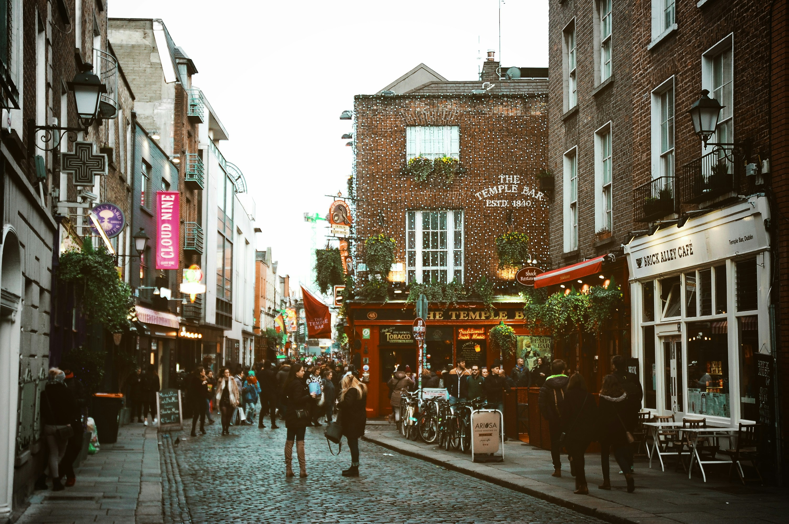
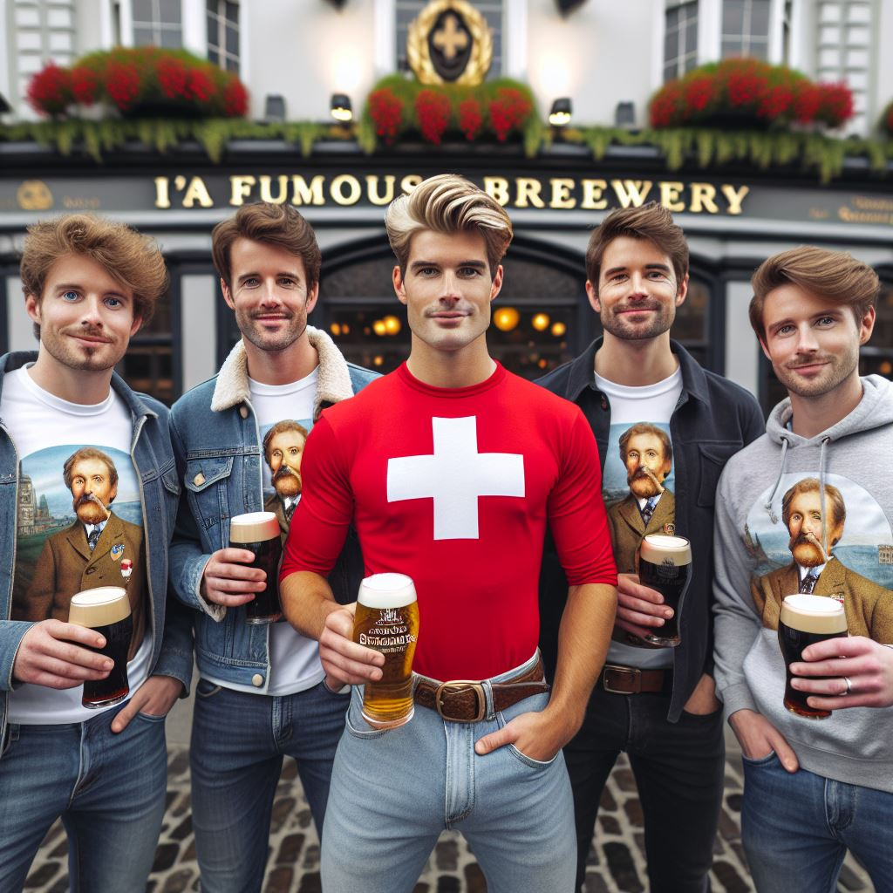
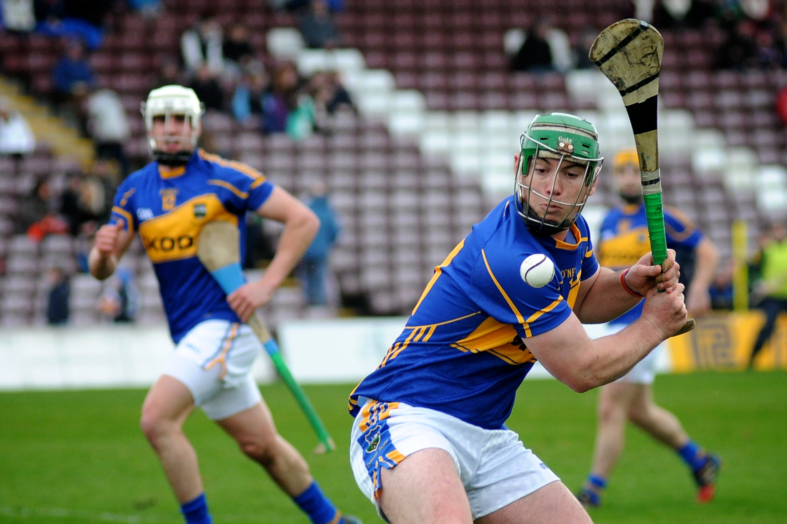
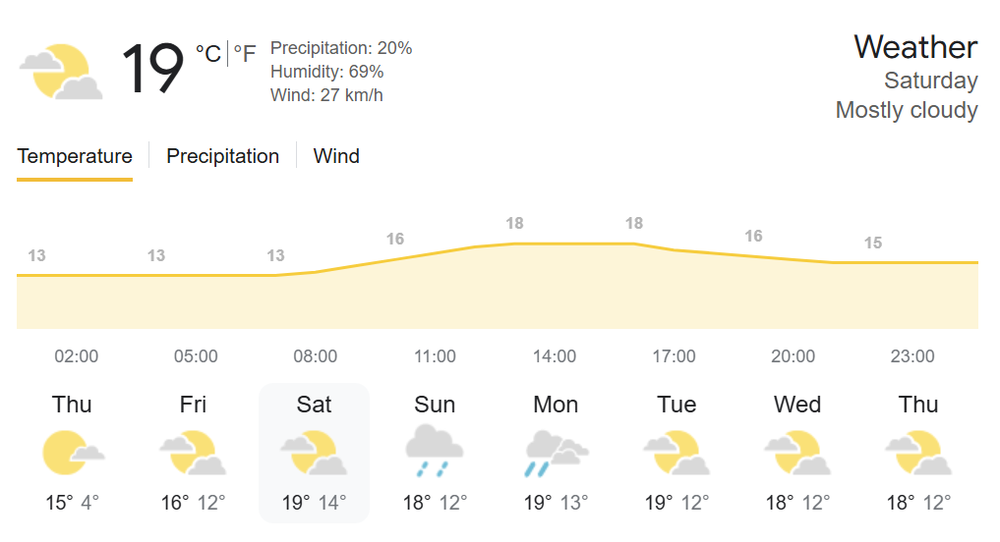
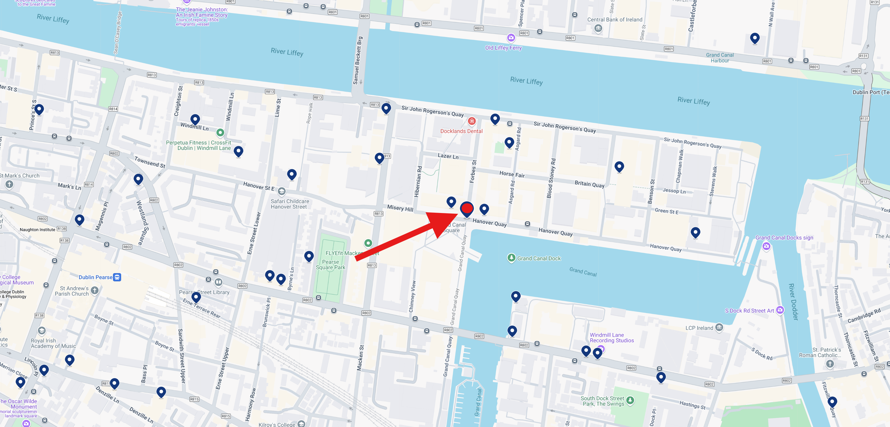

Summary
Zusammenfassung
Dublin, the capital of Ireland, has a rich history dating back over 1,000 years. Originally a Viking settlement known as Dyflin, it evolved into a bustling medieval city. The name “Dublin” comes from the Irish “Dubh Linn,” meaning “black pool.” Over the centuries, Dublin has been a center of culture, education, and industry. Today, it’s known for its vibrant arts scene, historic landmarks, and friendly locals.
Beer Culture
Bierkultur
Dublin's beer culture is legendary, with the city being home to the world-famous Guinness brewery. Visitors can explore traditional pubs, craft beer bars, and brewery tours. Key places to visit include the Guinness Storehouse, The Bernard Shaw, and The Glimmer Man.
A joint tour of the Guinness Brewery including tasting of the local beer is planned for Sunday 13:00.
Hurling
Hurling
Hurling is an ancient Gaelic sport, often described as a mix of lacrosse and field hockey. It’s fast-paced and played with a wooden stick called a hurley and a small ball called a sliotar. The game you’ll be attending at Parnell Park will showcase the skill and speed of this traditional Irish sport.
16:30 - 18:00 - Whitehall Colmcille vs. St. Judes @ Parnell Park
16:30 - 18:00 - Whitehall Colmcille vs. St. Judes @ Parnell Park
Weather
Wetter
During our trip from 13.9.24 to 16.9.24, we can expect mild temperatures ranging from 10°C to 19°C. The weather is likely to be partly cloudy with occasional showers, so packing a light raincoat is advisable.
Getting there
Anreise
Travelers from Switzerland to Dublin need a passport or national ID card. Ensure your documents are up to date before the trip.
We will fly with Swiss airline. Flight LX400 departs at 10:50 from Zürich (ZHR) to Dublin, and flight LX401 departs at 13:00 from Dublin back to Zürich. We will meet on the SBB train from Bern to Zürich Flughafen, departing Bern at 8:02.
| Date | From | To | Mode of Transport | Departure Time | Arrival Time |
|---|---|---|---|---|---|
| Sep 13 | Bern | Zürich Flughafen | Train | 08:02 | 09:28 |
| Sep 13 | Zürich (ZHR) | Dublin (DUB) | Flight LX400 | 10:50 | 12:30 |
| Sep 16 | Dublin (DUB) | Zürich (ZHR) | Flight LX401 | 13:00 | 16:30 |
| Sep 16 | Zürich Flughafen | Bern | Train | 17:02 | 18:28 |
Accommodation
Unterkunft
We will stay at the Grand Canal Square Apartments. The apartments are centrally located, offering easy access to Dublin's attractions.
Just in case: Phone number owner Grand Canal Square Apartments +353 1 443 3920.
We need to collect the keys at the Repeption in the main office: 168 Granby Place Dublin 1, D01 VP96. Check-In is from 15:30 onwards. Check out time is 10:30 am on the moring of departure.
Money
Kohle
The current conversion rate is 1 CHF = 1.07 EUR. Credit and debit cards are widely accepted. In Dublin, a pint of beer costs around €6, while in Bern, it costs approximately CHF 7.50.
Tip. There is no mandatory tipping culture in Ireland. People usually don't tip for many services, except in restaurants with table service or in cafes (depending on the service). Some restaurants already add a "service charge" of 10-12.5% to the bill.